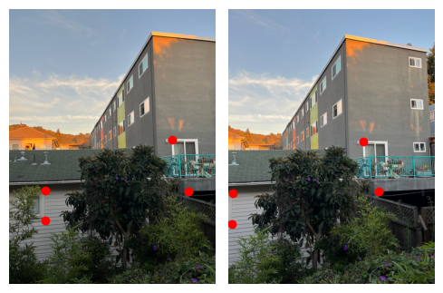
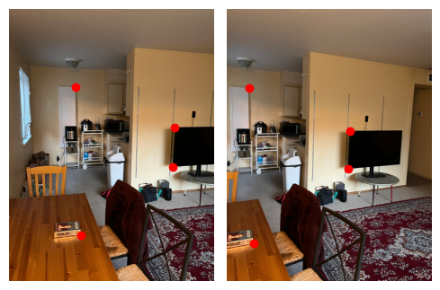

Part 2: Recovering Homographies
Before we can warp our images into alignment, we need to recover the parameters mediating this
transformation. We do this by defining a set of correspondences across the images. If we let \( p\) be the
vector of points in original image and \(p'\) be the vector in the transformed image, we can say that \( Hp
=
p'\) where H is a matrix of the following form.
$$ H = \begin{bmatrix} a & b & c \\ d & e & f \\ g & h & 1 \end{bmatrix} $$
As such, we use the correspondences to solve this matrix equation for the values of H and use this as our
project transformation. If we use too few correspondences then the system becomes unstable and we are not
provided a precise transformation. As such, we overdetermine the system and use least squares to find the
analytically optimal solution. After a bit of matrix-vector manipulation, we arrive at the system below,
where the leftmost matrix and rightmost vector are extended for each extra correspondence.
$$
\begin{bmatrix}
p_1 & p_2 & 1 & 0 & 0 & 0 & -p_1 p_1' & -p_2 p_1' \\
0 & 0 & 0 & p_1 & p_2 & 1 & -p_1 p_2' & -p_2 p_2'
\end{bmatrix}
\begin{bmatrix}
a \\
b \\
c \\
d \\
e \\
f \\
g \\
h
\end{bmatrix}
=
\begin{bmatrix}
p_1' \\
p_2'
\end{bmatrix}
$$
To this end, we write a function compute_homography(image, H) that does what is detailed above.
We use the point correspondences shown below.
| California Hall |
|---|
 |
| Balcony |
|  |
| Living Room |
|  |